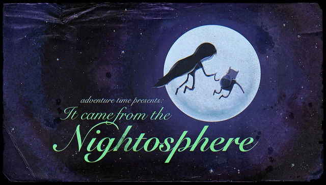

-

Sinopse:
Hunson Abadeer, o pai de Marceline, passa a sugar almas e espalhar o caos em Ooo após Finn libera-lo da Noitosfera, causando um grande desconforto para Marceline.
-
Sinopse:
Finn e Jake não conseguem dormir, porque um cavalo fora de sua casa não para de olhar para eles. Eles tentam o seu melhor para remover o cavalo, sem recorrer a medidas violentas para poderem voltar a dormir.